お気に入りの写真をいくつかお見せします。
| 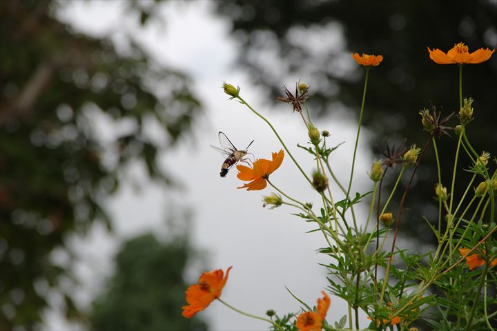 | 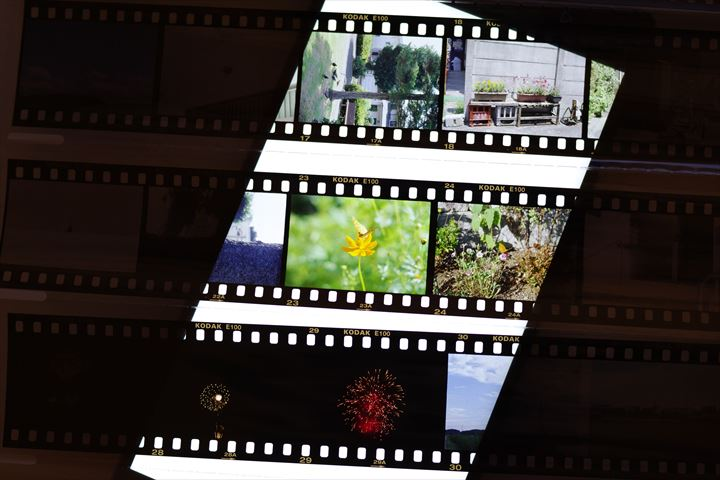 | 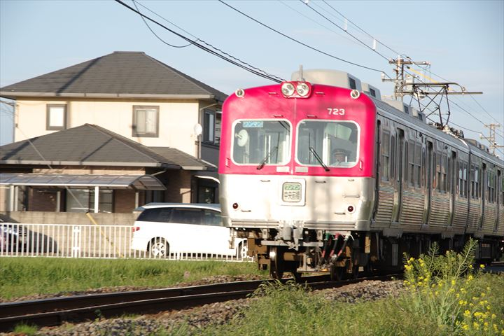 | 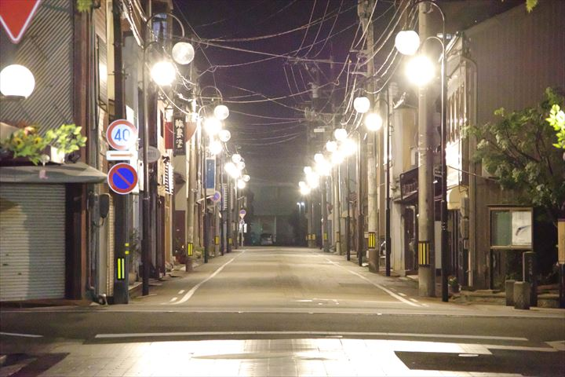 |
| オオスカシバ | リバーサルフィルム | 上毛電気鉄道 700型 | 三日市商店街 |
|
PENTAX KP smc PENTAX-DA 18-135mm F3.5-5.6 ED AL [IF] DC WR 1/2500 F6.3 ISO400 |
PENTAX KP HD PENTAX-DA 40mm F2.8 Limited 1/100 F4.0 ISO800 |
PENTAX KP smc PENTAX-DA 18-135mm F3.5-5.6 ED AL [IF] DC WR 1/60 F10.0 ISO100 |
PENTAX KP smc PENTAX-DA 18-135mm F3.5-5.6 ED AL [IF] DC WR 1/100 F6.3 ISO51200 |
| 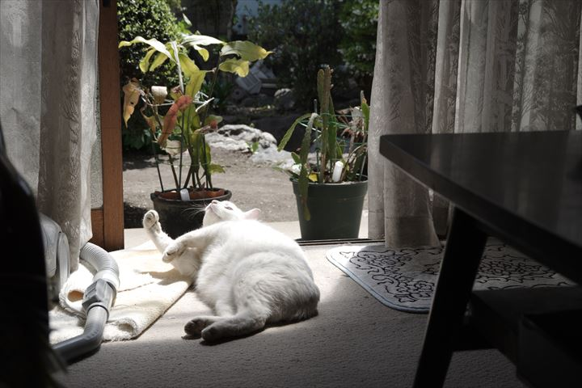 | 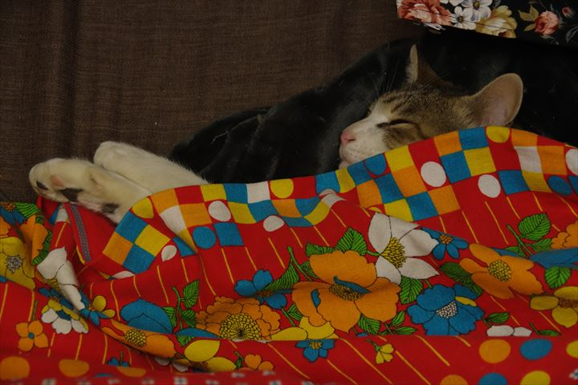 | 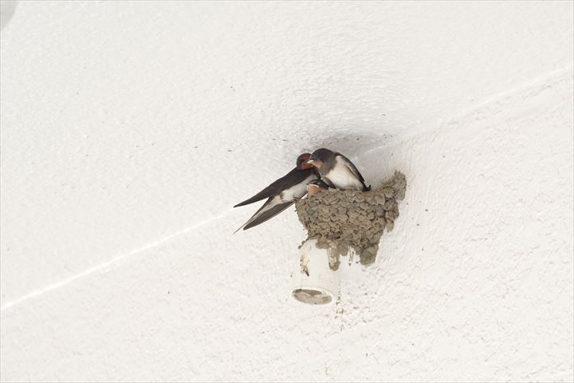 | 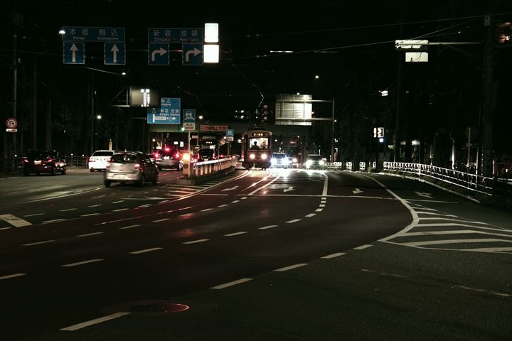 |
| チロ | ユヅ | ツバメ | 都電荒川線 |
|
PENTAX KP smc PENTAX-DA 18-135mm F3.5-5.6 ED AL [IF] DC WR 1/250 F6.3 ISO100 |
PENTAX KP HD PENTAX-DA 40mm F2.8 Limited 1/60 F6.3 ISO3200 |
PENTAX KP smc PENTAX-DA★60-250mmF4ED[IF] SDM 1/200 F8.0 ISO1600 |
PENTAX KP smc PENTAX-DA 18-135mm F3.5-5.6 ED AL [IF] DC WR 1/25 F6.3 ISO6400 |
| 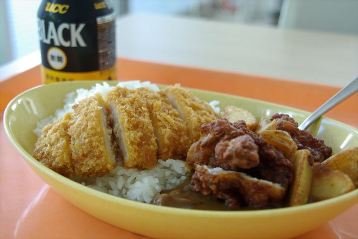 | 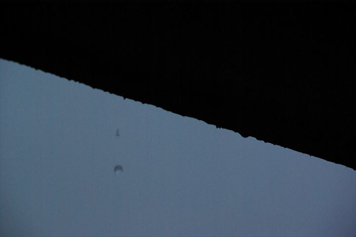 | 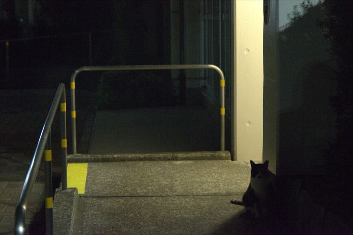 | 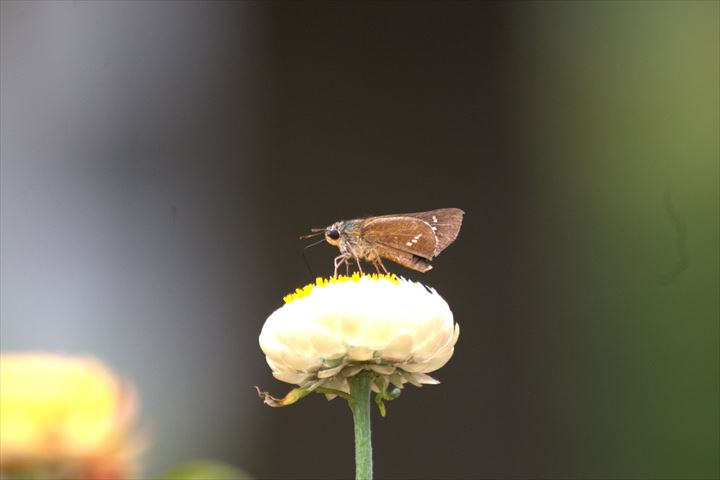 |
| とある日のお昼ごはん | 雨粒 | 門番 | イチモンジセセリ |
|
PENTAX K10D SIGMA DL-II 35-80mm F4-5.6 1/15 F5.6 ISO100 |
PENTAX K10D SIGMA DL-II 35-80mm F4-5.6 1/250 F10.0 ISO1600 |
Nikon D300 Nikkor 28-80mm f/2.5-5.6G 1/100 F5.6 ISO1600 |
Nikon D300 Tamron SP 70-300mm f/4-5.6 Di VC USD 1/250 F5.6 ISO800 |
| 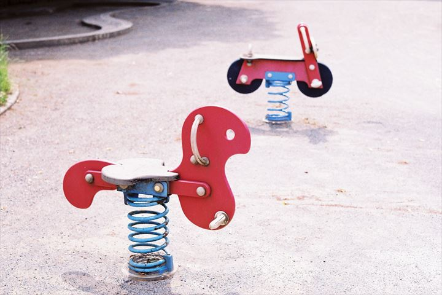 | 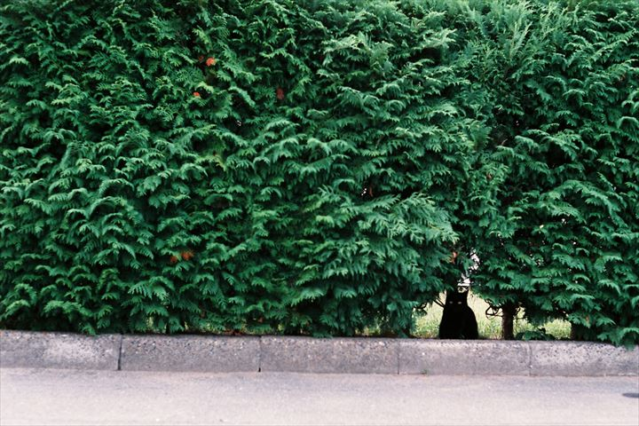 | 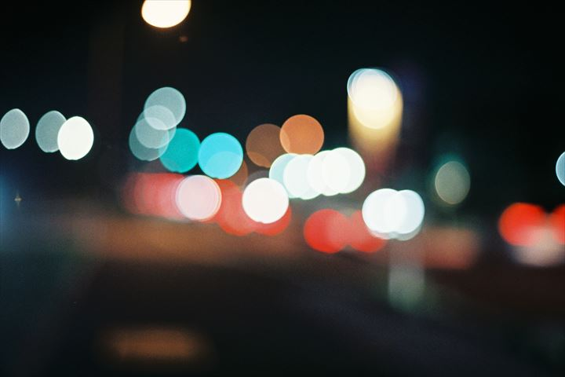 | 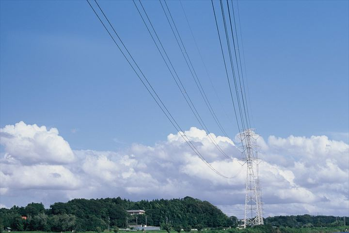 |
| スプリング | 秘密の通路 | ボケ | 送電線 |
|
PENTAX SV Super-Takumar 55mm F1.8 Kodak GOLD 200 |
PENTAX SV Super-Takumar 55mm F1.8 FUJICOLOR SUPERIA PREMIUM 400 |
PENTAX SV Super-Takumar 55mm F1.8 FUJICOLOR SUPERIA Venus 800 |
PENTAX SV Super-Takumar 55mm F1.8 Kodak EKTACHROME E100 |
| 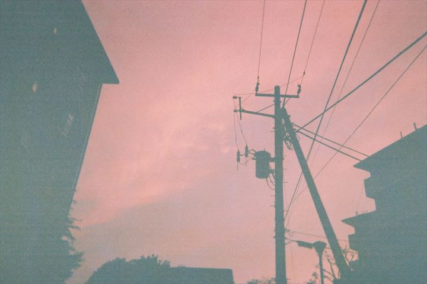 | 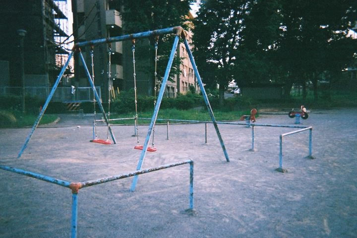 | 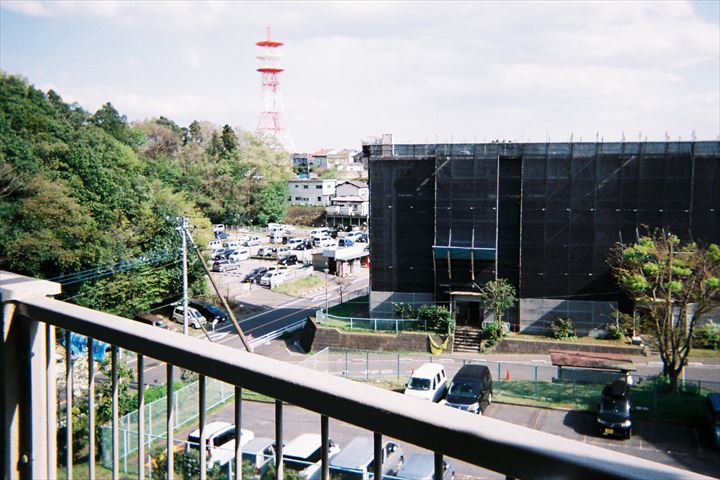 | 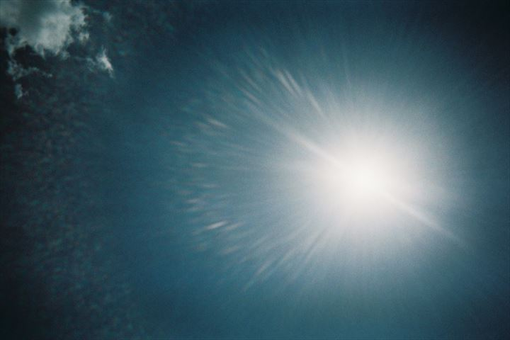 |
| 夕暮れ | ブランコ | 米本団地 | 太陽 |
|
写ルンです シンプルエース 1/140 F10 ISO400 |
写ルンです シンプルエース 1/140 F10 ISO400 |
写ルンです 1600 Hi・Speed 1/200 F14 ISO1600 |
写ルンです 1600 Hi・Speed 1/200 F14 ISO1600 |